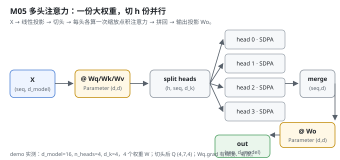
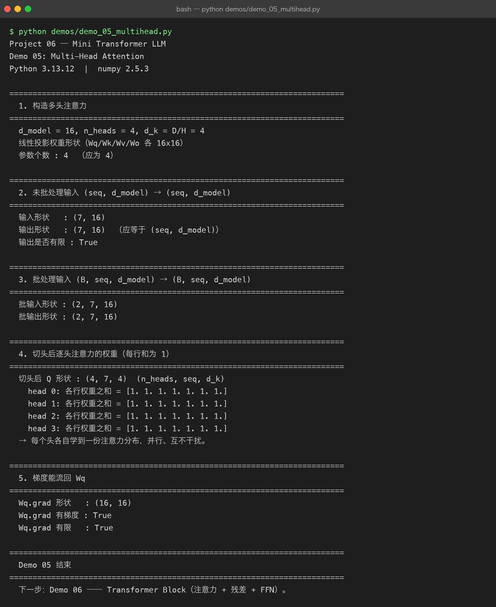

Milestone 05 — Multi-Head Attention：把 d_model 切成 h 份并行看
Milestone 04 写通了单头注意力：每个位置学一种「该看哪里」的模式。但语言里要同时关注的东西很多 —— 语法依存、指代、远近、语义相似。单头注意力一次只能学一个模式。Multi-Head Attention 的解法很朴素：把 d_model 切成 h 份，每份各自算一次注意力，再拼回去。
在 Project 05 里 nn.MultiheadAttention 一行搞定；这里我必须自己写「线性投影 → 切头 → 逐头注意力 → 拼回 → 输出投影」整个过程，而且要保证每个 reshape/transpose 都有正确的反向，否则 Wq 的梯度回不来。
1. What / Why：为什么要多头，而不是把单头做大
单头注意力只有一个 (seq, d_k) 的「注意力视角」。多头让模型在不同的子空间并行学不同的关系：头 0 可能盯着就近的语法、头 1 盯着远距离指代…… 实现上不用 h 套独立权重 —— 一份大 Wq 切分即可，参数没变多，只是「看的角度」多了。
关键工程点：切头/拼头全是 reshape + transpose，这些算子必须带反向，否则拼回去之后梯度对不上。本项目所有 reshape/transpose 都挂在 autograd 上（src/model/autograd.py 里 reshape/transpose 都写了 _backward）。
2. Design：一份大权重，切 h 份
src/model/multihead.py 的 MultiHeadAttention：
- 构造时检查
d_model % n_heads == 0，否则直接ValueError（下游维度就对齐不了）。 - 四个线性投影
Wq/Wk/Wv/Wo，都是Parameter(np.random.randn(d_model, d_model) * 0.02)（共享一份大权重，再切头）。 _split_heads：(B, seq, d_model) → (B, n_heads, seq, d_k)，先 reshape 再 transpose；未批处理时先补 batch 维。_merge_heads：反过来，(B, n_heads, seq, d_k) → (B, seq, d_model)。forward：q = split(linear(x, Wq))→ 对每头scaled_dot_product_attention→merge→linear(ctx, Wo)。

3. Real-run evidence（来自 demos/out/demo_05_multihead.txt）
真实环境：Python 3.13.12 | numpy 2.5.3。
d_model = 16, n_heads = 4, d_k = D/H = 4
线性投影权重形状（Wq/Wk/Wv/Wo 各 16x16）
参数个数 : 4 （应为 4）
未批处理输入 (seq, d_model) → (seq, d_model)
输入形状 : (7, 16)
输出形状 : (7, 16) （应等于 (seq, d_model)）
输出是否有限 : True
批处理输入 (B, seq, d_model) → (B, seq, d_model)
批输入形状 : (2, 7, 16)
批输出形状 : (2, 7, 16)切头后 Q 形状 (4, 7, 4)，且每个头各自学到一份注意力分布（每行和为 1）：
切头后 Q 形状 : (4, 7, 4) (n_heads, seq, d_k)
head 0: 各行权重之和 = [1. 1. 1. 1. 1. 1. 1.]
head 1: 各行权重之和 = [1. 1. 1. 1. 1. 1. 1.]
head 2: 各行权重之和 = [1. 1. 1. 1. 1. 1. 1.]
head 3: 各行权重之和 = [1. 1. 1. 1. 1. 1. 1.]
→ 每个头各自学到一份注意力分布，并行、互不干扰。最重要的是 —— 梯度真的流回了 Wq：
Wq.grad 形状 : (16, 16)
Wq.grad 有梯度 : True
Wq.grad 有限 : True这说明切头/拼头的 reshape+transpose 反向写对了：反向传播能一路乘回 Wq，训练时这层才学得到东西。

4. Bugs / lessons
本 milestone demo 没有暴露真实运行 bug。一个设计层面要注意的坑：切头前必须保证 d_model 能被 n_heads 整除。源码在 __init__ 里直接 raise ValueError，而不是让它静默算出一个怪形状 —— 否则 (B, T, n_heads, d_k) 的 reshape 会数组长度对不上，报一个很难定位的 ValueError。把这条约束前置到构造期而不是前向期，排查成本最低。
5. Conclusion
- 多头 = 「把
d_model切成h份，各自看一种关系」，参数没多，视角多了。 - 不需要
h套独立权重：一份大Wq切分即可，拼回靠 reshape+transpose。 - reshape/transpose 必须带反向，否则
Wq梯度回不来 —— 这里Wq.grad有限且非零，证明反向写对了。 d_model % n_heads != 0要在构造期就报错，别拖到前向 reshape 才炸。
6. Code map
| 文件 | 职责 |
|---|---|
src/model/multihead.py | MultiHeadAttention（4 个投影 Parameter + _split_heads / _merge_heads + forward） |
src/model/attention.py | 复用 scaled_dot_product_attention / causal_mask |
demos/demo_05_multihead.py | 5 节演示：构造 / 未批处理 / 批处理 / 逐头权重 / 梯度，输出落 demos/out/demo_05_multihead.txt |
assets/multihead.svg | 本章数据流图 |
7. Version line
v0.3 → v0.4，多头注意力落地（切头/拼头 reshape+transpose 反向正确，梯度可回写 Wq），演示真实跑通并核对每头分布与梯度，配图 1 张手写 SVG + 1 张真实终端截图。